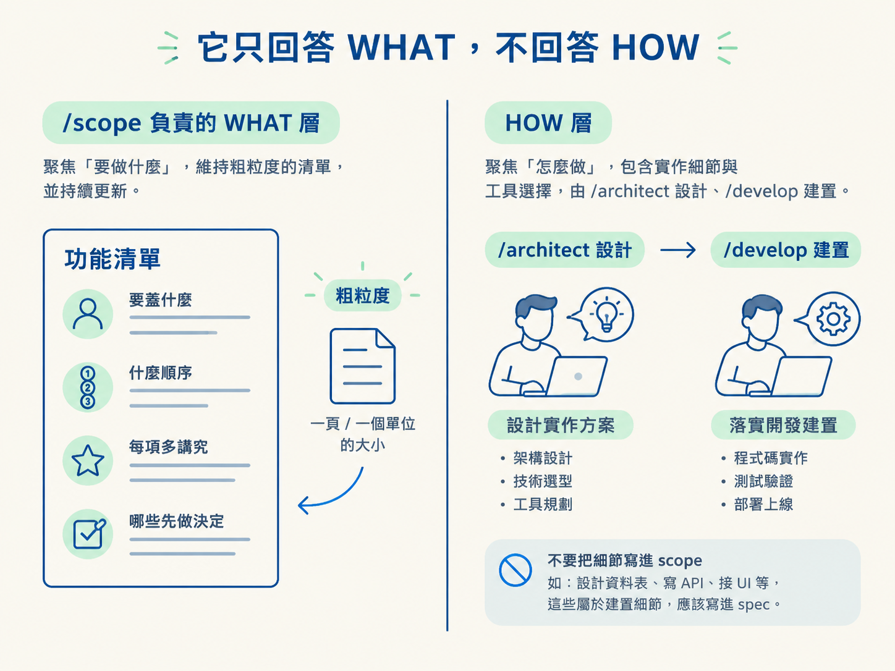
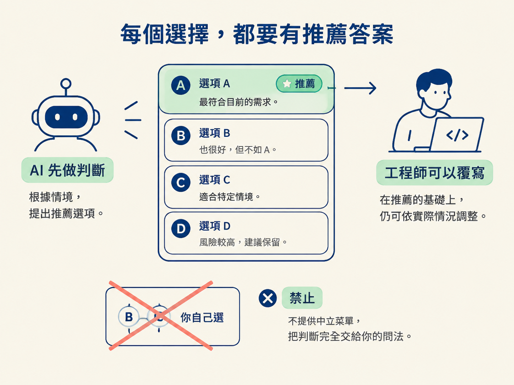

/scope 是什麼：把點子變成粗的、活著的 WHAT週末想到一個產品點子，打開 AI 說：「幫我做一個 async standup app。」AI 馬上建專案、寫登入頁。兩個小時後，東西確實能跑，卻沒人說得清楚第一版包含什麼、哪些先不做，以及接下來該先完成哪一件事。
之後每加一個功能，都得重新回答同一題：「現在該做什麼？」功能會持續增加，但沒有一份共同清單可以對照，專案也就像沒有地圖的施工現場，越蓋越難改。
/scope 補的就是這一層。它把「要蓋什麼」整理成一份粗略、按順序排列，而且會持續更新的清單，放在專案的 docs/scope/。這一節先講它的職責和邊界，後面四節再拆它的產出、選項、流程和維護。
工程流程可以先分成兩個問題：決定要蓋什麼，以及決定怎麼蓋。/scope 只處理第一個問題。
它產出一份有順序、保持粗粒度，而且會持續更新的計畫，回答四件事：
它刻意不回答「某個功能要怎麼實作」。那是 /architect 負責設計、/develop 負責建置的部分。
「粗略」是這裡的關鍵。feature 應該維持在一個頁面或一個完整單位的大小，例如「登入」「建立 team」「提交今天的 standup」。不要拆成「設計 users 資料表」「寫 API」「接 UI」。這些是建置細節，應該寫進 spec。scope 如果細到這個程度，就會變成另一份需要同步維護的程式碼。

你永遠只需要輸入 /scope [what]，不使用子命令。它會先檢查 docs/scope/ 是否存在，再根據目前情境推斷這次要做什麼。
| 你的情境 | 選擇的行為 | 它會做什麼 |
|---|---|---|
| 還沒有 scope，而且你提供了產品級點子 | plan | 完整規劃：提問、切分 feature、排序並寫入 |
| scope 已存在，而且沒有提供參數 | replan | 讀取現況、對帳已出貨項目，再排出下一片 |
| scope 已存在，而且參數指向單一 feature | add | 只補上一列，不重新規劃整份 scope |
| 還沒有 scope，也沒有提供點子 | 先問 | 停下來問你「你在蓋什麼」 |
有些情境可能介於「新增一片」和「補一個功能」之間。這時它會從現有 scope 推斷最合理的解讀，並在報告中說明自己選了哪一種行為。只有真的無法判斷時，才會問你一句釐清。
了解一個工具不做什麼，比背下它會做什麼更有用。/scope 明確不做以下四件事：
/architect，會寫進每個 feature 的 spec。AGENTS.md。為什麼工具選擇要延後？因為 scope 必須維持工具無關，才不會很快腐爛。假設今天在 scope 裡寫死「使用 Prisma」，半年後換了 ORM，這份計畫就會開始誤導人，但 scope 原本應該是專案裡最可信的那份總覽。
這個邊界也帶出一條判斷規則：如果某個 feature 隱含一項工具選擇，就把它標成 Needs spec: yes。因為「要用哪一套工具」正是需要 /architect 記錄下來的決定。
/scope 要你做決定時，不會只丟一句冷冰冰的開放問題，會給 2 到 4 個具體選項。其中恰好一個標為 (recommended)，並附上一行推薦理由。
它不做中立菜單。「A、B、C，你自己選」這種把判斷整個推回給你的問法，它不會用。它的做法是 AI 先判斷、提出推薦，工程師仍然可以覆寫。之後的 /architect 也遵守同一套紀律。

/scope只回答「要蓋什麼、什麼順序、多講究、哪些要先決定」，把「怎麼蓋」留給後面的 skill。它用一個指令推斷三種行為，產出一份粗的、會長大的清單；需要你選擇時，則提供可覆寫的推薦，而不是中立選單。
看到這裡，/scope 的位置就清楚了：它是從點子走向建置前的 WHAT 層，負責讓團隊知道要往哪裡走，卻不介入施工方法。下一節會攤開這份清單的實際形狀，包括它的表格、每個 feature 的段落，以及最容易讓人困惑的勾選框。